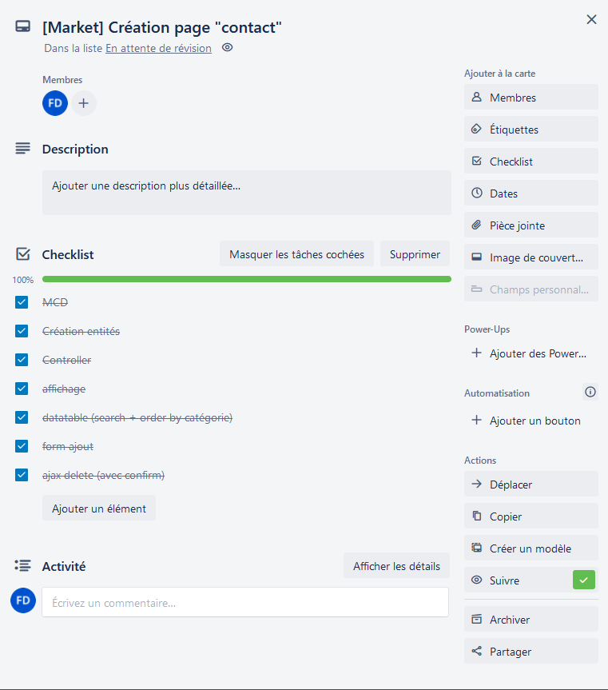
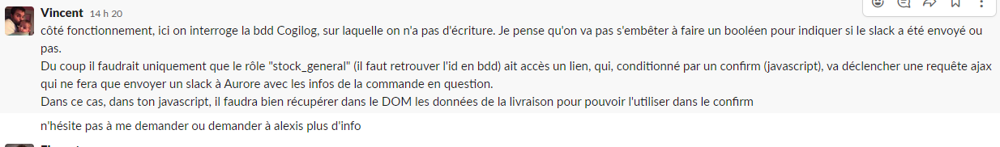
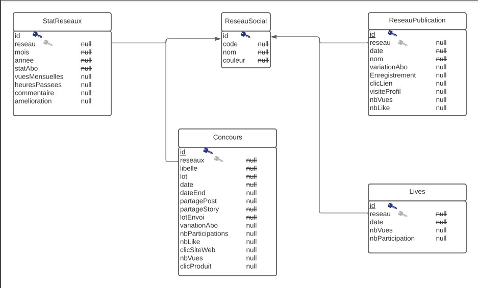
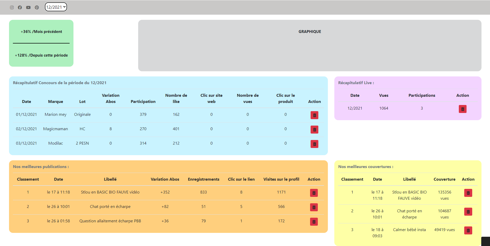
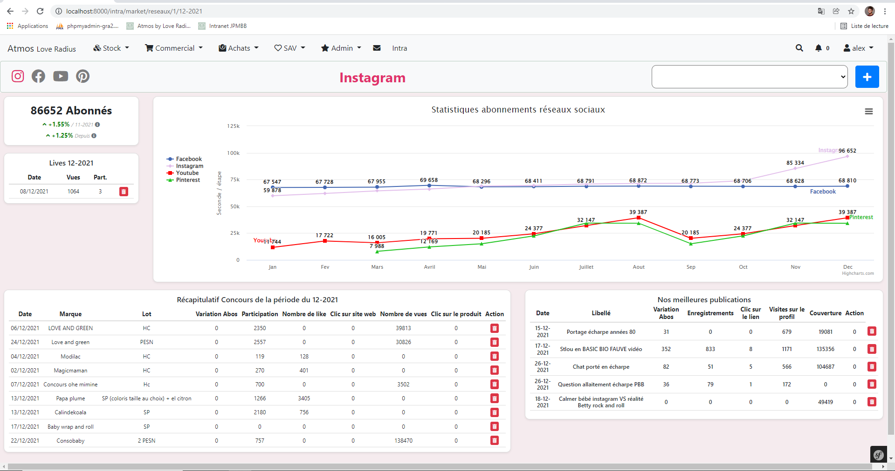

Présentation de l'entreprise :
Mes deux stages de BTS SIO se sont déroulés chez Love Radius. C’est une entreprise de vente de portes-bébé et d'écharpes de portage, fondée à Paris en 2007, c'est avant tout une histoire de famille avec la découverte du portage lors de la naissance du 1er enfant des co-fondateurs.Elle effectue de la vente en ligne en B to C mais également en B to B afin d’avoir certains de leurs produits en vitrine de boutiques.
Contexte de mes stages :
Durant mes deux stages j’ai été sous la tutelle d’Alexis Massia,
développeur Web dans l’entreprise.
J'ai donc été accueilli dans l'open space dans lequel ils travaillent, composé d'une dizaine de personnes qui regroupe donc
les développeurs, les responsables service après vente
et marketing etc... le tout pour le même nombre de machines.
Il y a également une partie stock, dont je retrouvais les employés lors des pauses. C’est de là que partent toutes les commandes grâce aux agences de livraisons qui
viennent les récupérer en direction des particuliers ou des entreprises.
Après la phase de découverte de l’entreprise et de l’espace de travail avec mon tuteur, je me suis approprié mon poste de travail et découvert les différents logiciels utilisés ainsi que la
structure du code et des bases de données afin de pouvoir travailler sereinement par la suite. J’ai également été intégré à leur équipe Github
(versionning), à leur groupe Slack (messagerie instantanée) et enfin leur tableau
Trello (suivi de projet).

Mes missions :
1ère année :
Mes principales missions ont été de développer des outils ou d'ajouter des fonctionnalités à ceux existants pour la responsable marketing et image de la marque. J'ai alors principalement travailler sur l’intégration et l’optimisation de plateformes front et back office, utilisant les technologies PHP/MySQL/HTML/CSS, du moins, lors de mon premier stage. Travail sous forme de missions permettant de répondre à des besoins venant de différents employés de différents services comme le SAV ou la communication par exemple.
Exemple d'une mission :
- Je reçois donc la demande sur Slack

Ici concrètement je devais ajouter un bouton qui permet de faire un export PDF pour le SAV afin d'exporter des factures.
J'ai donc commencé par faire apparaître le bouton mais visible seulement par les utilisateurs concernés, c'est-à-dire
ceux possédant le rôle "stock_general". C'est-à-dire ici ceux dont "id_role" vaut 6 :
2ème année :
Pour mon second stage j'ai donc été accueilli dans les mêmes conditions que le premier. J'ai donc de nouveau été ajouté à l'équipe de développement Github en tant que collaborateur, puis au canaux de discussions Slack et au tableau Trello.
Pour ce stage d'une durée de 6 semaines de nouveau, j'ai eu à redévelopper les outils marketing déjà existants mais sous une nouvelle technologie. En effet, leurs anciens outils étaient développé en PHP flat, étant en pleine migration vers de nouveaux outils, ils travaillent alors sous le framework Symfony.
Exemple :
La page la plus longue à développer a été une page qui effectue des statistiques des différents concours, publications et lives en fonction du réseau social.
Voici donc d'abord la structure de base de données imaginée :

Puis ensuite, une maquette purement visuelle :

Résultat final et explications :

Les boutons situés en haut à gauche sous forme de logo des réseaux sociaux permettent de naviguer entre-eux, associé au bouton select qui permet de sélectionner une période.
Il y a ensuite un onglet avec les statistiques en terme d'abonnés de ce réseau, avec un comlparatif en pourcentage par rapport à la période précédente, puis celui depuis
la période sélectionnée par rapport à aujourd'hui.
Puis pour finir, les onglets principaux avec un récapitulatif des concours de la période, ainsi que des publications, le tout surplombé d'un graphique
permettant de se rendre compte de la progression sur toutes les périodes.